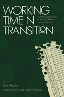

How technological and market changes affect labor
How technological and market changes affect labor


 How technological and market changes affect labor
How technological and market changes affect labor

|  |
Working Time in TransitionThe Political Economy of Working Hours in Industrial Nationsedited by Karl Hinrichs, William Roche and Carmen Siriannicloth EAN: 978-0-87722-757-1 (ISBN: 0-87722-757-8) |
The organization of working time in advanced industrial nations is currently in the midst of a profound shift away from standard hours and toward greater flexibility and diversity of schedules. This shift has major implications for industrial relations systems, the relative power of employers and unions, and the politics of labor markets and gender equity.
This volume explores the broad significance of these developments cross-nationally in Europe, the United States, and Japan. The essays examine technological, and market changes that place a premium on greater flexibility, the successes and limits of trade union campaigns for shorter standard hours as a response to employment crises in the 1970s and 1980s, the impact of reducing standard work hours upon leisure time, the increasing diversity of employee preferences, and the decline in the male norm’s influence on working time and working life. Developments in part-time and temporary work, as well as more innovative policies in parental leave, job sharing, and flexible retirement, are analyzed. Placing these developments in broad historical and theoretical perspective, the authors reveal the centrality of time as a contested terrain of workplace and gender politics.
Working Time in Transition elucidates the underlying structural and political conflicts that lead to changes in working time regimes in Western nations and Japan. It will be of interest to employers, union leader, state and federal policy makers, economists, and corporation and union researchers.
1. From Standardization to Flexibility Changes in the Political Economy of Working Time – Karl Hinrichs, William Roche, and Carmen Sirianni
2. Working Time Development in West Germany: Departure to a New Stage – Karl Hinrichs
3. Working Time Policies in France – Jean-Pierre Jallade
4. The Chimera of Changing Employee Time Preferences: Working Hours In British Industrial Relations since the Second World War – William Roche
5. Where Have All the Hours Gone? Working Time Reduction Policies in the Netherlands – Chris de Neubourg
6. The Reduction of Working Hours in Belgium: Stakes and Confrontations – Annik de Rongé and Michel Molitor
7. Trading Time for Consumption: The Failure of Working Hours Reduction in the United States – Susan Christopherson
8. The Working-Bee Syndrome in Japan: An Analysis of Working Time Practices – Christoph Deutschmann
9. On the Road to a Society of Free Choke: The Politics of Working Time in Sweden – Ulla Weigeit
10. The Self-Management of Time in Post-lndustrial Society – Carmen Sirianni
About the Contributors
Karl Hinrichs is Research Associate at the Centre for Social Policy Research at the University of Bremen.
William Roche is Senior Lecturer in Industrial Relations at University College in Dublin.
Carmen Siranni is Associate Professor of Sociology at Brandeis University and the coeditor of the Labor and Social Change Series.
Labor Studies and Work
Political Science and Public Policy
Labor and Social Change, edited by Paula Rayman and Carmen Sirianni.
Labor and Social Change, edited by Paula Rayman and Carmen Sirianni, includes books on workplace issues like worker participation, quality of work life, shorter hours, technological change, and productivity, as well as union and community organizing and ethnographies of particular occupations.
© 2015 Temple University. All Rights Reserved. This page: http://www.temple.edu/tempress/titles/621_reg.html.